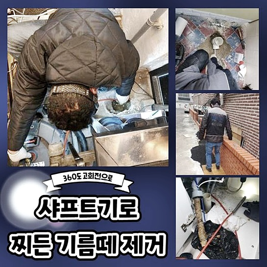
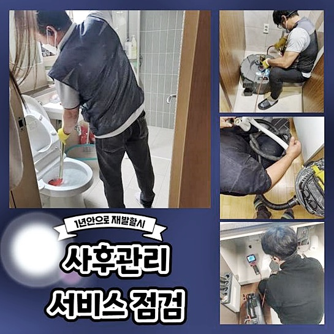
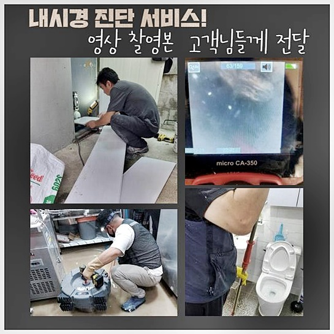
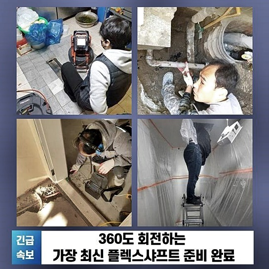
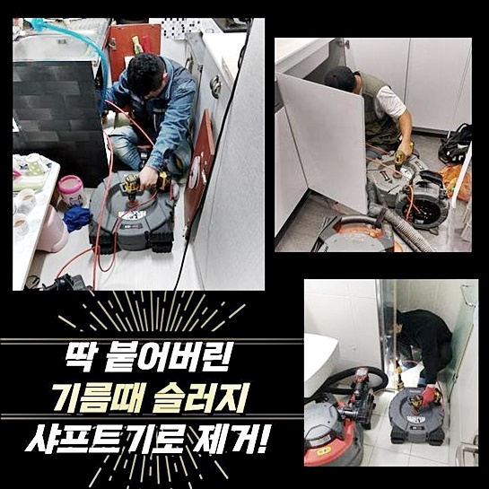
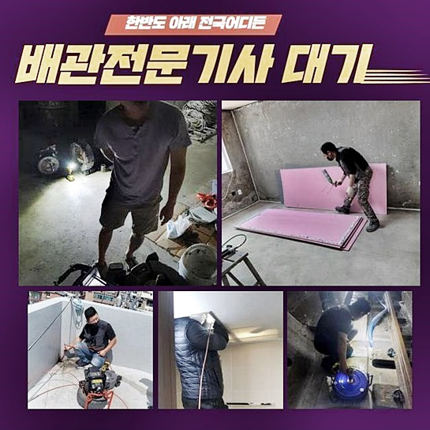
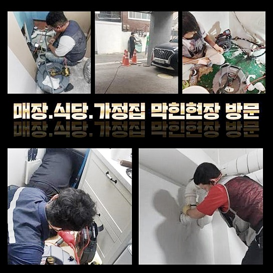

🏠 동두천 보산동 대변기막힘 탑동동 하수구뚫는비용 설비하는곳
용인시 처인구 배관막힘 전문 시공 후기

📋 작업 개요
- 위치: 용인시 처인구, 수원시 영통구, 화성시 동탄
- 서비스 유형: 배관막힘, 누수수리, 고압세척, 내시경점검
- 작업 일시:
- 업체명: 하수구수사대 (010-5615-2118)
🔍 문제 상황
동두천 보산동 대변기막힘 탑동동 하수구뚫는비용 설비하는곳
물이 안내려가는 건 대다수의 주택이나 업소등에서 심심치않게 생겨나는 문제인데요
더군다나 밀집도가 높은 상가라던지 대단지 거주지에선 지속적으로 불거지는데, 외측에 자리한 잔해가 하수관로로 빠지기 때문이에요
유수들이 육안으로도 답답하거나 역류해버리는 피해가 생겨날 시엔 전문진의 손을 빌려 서둘러 문제들을 파해하는게 우선입니다
증세가 발발하는 주요 원인이라 한다면 하수도에 쌓여버린 오염원을 빼놓을 수 없겠습니다
하수시스템의 경우 기본적인 내용이나 관련지식들이 부재된 보통 사용자가 고쳐내는게 어려우므로 전문성을 가진 업체들에게 문의하시는것이 중요해요
종종 가정에서 가지고계시는 압축기기나 세척용액을 쓰셔서 일단은 문제들을 해결하려고 시도해보는 경우도 있지만, 온전한 조치가 불가하죠
또한 오염물을 확실하게 청소시키지 못해서 동일한 문제들이 야기될 확률이 상승하고 손상의 가능성까지 포함하니 조심성이 필요해요
조리공간 등에서는 하수관로에 누적된 음식잔해로 나타나는 경우들이 대부분입니다

🔎 원인 분석
💡 전문가 진단: 정밀 진단 장비를 사용하여 슬러지의 고착 여부를 판명하고 타격/세척 작업을 실시했습니다.
기름슬러지도 마찬가지로 군데군데 자리잡으며 또한 온도가 낮은 수도와 만나서 단단해져 배수길을 막아서는 제대로 불러일으킵니다
머리카락으로 말씀드리면 배수구로 나가게 되며 구간에 따라 쌓여버리는걸 기반해서 잔여물질이 뒤엉키면 면적 자체를 불게하고 배관을 제대로 막아버려요
슬러지들을 안정적으로 없애도록 흔하게 가지고있는 도구들을 써서 무작정 증상완화를 달려드는 것보다는
전문성을 필두로 한 기술들을 보유하고 있는 전문업체께 도움을 청하는게 좋은데요
위험한 조치법으로 해결들을 강행한다면 파손의 위험이나 역류증세를 불러일으키는데 자가적인 방법의 경우 또한 상황을 최악으로 만들고 수리하는데 지출을 증가시켜요
때문에 증세가 발생되었을 시 빠르게 배관 해결사에 도움을 청하는게 좋겠습니다
며칠전 하수구 증세를 고쳐낸 사례를 말씀드리고자합니다
고객분의 경우 계속해서 물배출이 떨어지고 정체해버리는 증세가 발발했지만
증세를 해결할 생각을 못하시고 해결들을 연기하셨다가 며칠전에 문제들이 불거진 상황들을 보고서 황급히 저희의 전문가께 도움을 청하셨죠
배수불가는 거주지나 상업시설에 상관없는채로 어디라도 대개 발생되며 음식잔해물로 대표되는 통수를 방해하는 이물이 배수관으로 퇴적되는 현상을 원인들로 하여 불거지죠

🔧 작업 과정
기름의경우에는 흡착한다던가 찬 물들과 뒤섞이며 벽부분에도 고착되어 문제들을 발생시키죠
해당 증상들을 풀어내기위하여 우선 내시경기기를 사용해서 하수관을 점검했는데요
내시경도구를 활용해주는 점검은 막혀버린 스팟과 양상을 빈틈없이 체크해보기 위한거라 할 수 있어요
카메라의 라인과 이어져있는 송출화면을 샅샅히 체크해보며 부위마다 진단을 실시하니 메인관로 내측에 대다수의 잔여물질이 자리잡은 것을 확인했어요
이런 때에서는 분쇄시키는 도구들의 가용보단 고압노즐을 사용해주는게 단순 관통보다 효과가 있는 방법들이라 할수있는데요
고압노즐분사방식은 하수관로에 분사하여 기름이 가득한 오염물을 제거하여 없애주는 해결책으로 이어지죠
작업진행 중엔 내구성 등과 지점에따라서 상이한 분사들을 이어가야 누수되거나 손상들이 발발하는 것을 예방생각하셔도 무방해요
저희의경우 지금까지의 작업개시로 이런 주의사항들을 준수하고 있는 까닭에 고압수청소를 이행할 시 다각적인 관점에서 확실하게 파악한 후 위치마다 적합한 압력 자체를 적용시켜 세척증상완화를 이행해요
청소가 끝나면 재차 내시경카메라를 사용하여 배수관을 검수하고 이물이 제거되었는가 검산과정을 거쳐요
내시경카메라를 지속시키는 단계를 거듭해 특이사항이라던가 이물누적의 심각성을 관찰하며 고압청소가 이행되고
구간에 따라 검수하고 계속적인 세척해결을 진행시키면 그 간 하수도에 쌓인 잔해를 청결하게 청소된 모습을 확인할 수 있죠
시공이 마무리 된 시점에는 반복하여 하수관을 살펴보는 절차들도 반복했고 확인하고서 미해결된 스팟이 확인되면 우선적으로 추가 해결을 진행하니 염려하실 필요가 없죠
막히는 문제들이 일상에까지 들어왔을 시 특별한 대응없이 방임한다면 물이 새는 피해가 발생보셔도 됩니다
물샘은 굴착까지 해야하는 등 공사과정이 복잡해지며 금액들도 부담이되기에 이러한 증상이 목격되면 신속히 대처하는 것이 좋겠습니다
여러분께서 막히는 문제를 피하고싶으시면 배수구부분에 확실히 설치할 수 있는 각종 배수구망을 설치해 필요치않은 잔여물질이 빠지는걸 차단해주는것도 탁월한 선택들이 된답니다


✅ 작업 완료
그럼에도 문제가 갑자기 나타나면 초반에 인지한 뒤 전문진의 문의에 따라 안정화하는게 최고의 방식이라 볼 수 있겠습니다
전문성을 필두로 한 해결능력을 구비한 업체와 힘을 합친다면 배수불가는 어렵지않게 해소해내게 됩니다
저희업체는 관련 문제완화들을 의뢰하신다면 의뢰인분의 피해를 재빨리 고쳐낸다는 마음가짐으로 청소를 실시합니다
전문업체가 요구된다면 부담없이 즉각 저희들과 타파해보아요!




⚠️ 하수구 배관 막힘 예방 및 관리 가이드
- ✅ 머리카락, 비닐, 물티슈 등 물에 분해되지 않는 이물질은 절대 흘려보내지 마세요.
- ✅ 기름기 많은 식기는 설거지 전 키친타올로 먼저 기름때를 닦아내세요.
- ✅ 주기적으로 배수구에 뜨거운 물을 가득 부어주어 유지방 고착을 방지하세요.
- ✅ 작업 후 1년 이내 재발 시 무상 A/S 보증 서비스를 제공합니다.
💡 핵심 정리
- 확실한 장비 작업(내시경 점검 및 샤프트 스케일링)으로 원인을 뿌리 뽑습니다.
- 작업 후 1년 이내에 동일한 부위 재발 시 100% 무상 A/S 서비스를 보장합니다.
- 서울 · 경기 · 인천 전 지역에 24시간 언제든 긴급 출동할 수 있도록 항시 대기 중입니다.
❓ 자주 묻는 질문 (FAQ)
🚨 용인시 처인구 배관막힘 문제로 고민이신가요?
정확한 원인 진단과 확실한 시공으로 재발 없는 해결을 약속드립니다.
24시간 긴급 출동 | 서울 · 경기 · 인천 전지역 | 1년 내 재발 시 무상 A/S